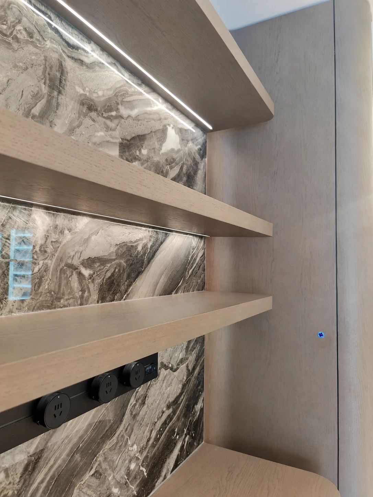
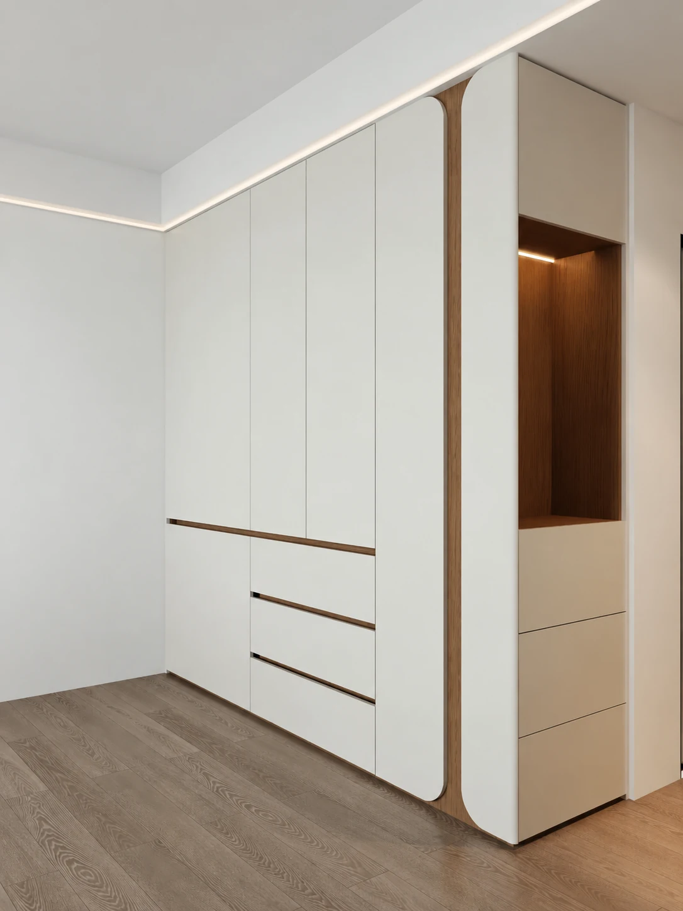

Hout & steen in balans
Een gesloten kastenwand wordt gecombineerd met verlichte legplanken en een uitgesproken steenlook achterwand. Details laten de verhouding tussen open en gesloten opbergruimte zien.

Over deze beeldselectie
Hout & steen in balans
Een gesloten kastenwand wordt gecombineerd met verlichte legplanken en een uitgesproken steenlook achterwand. Details laten de verhouding tussen open en gesloten opbergruimte zien.
Fotogalerij05 IMAGES




Originele afbeeldingen uit de nieuwe upload. Bestaande platformmarkeringen op 9 beelden zijn niet gewijzigd.